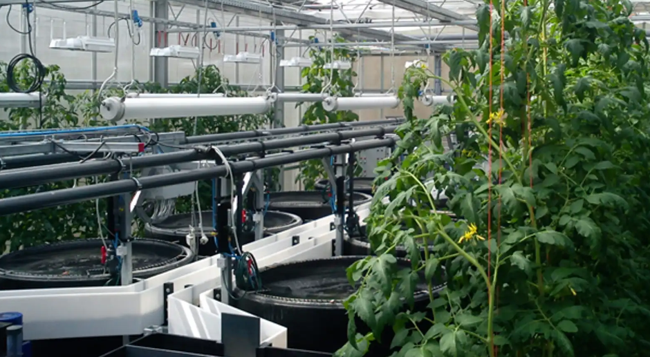
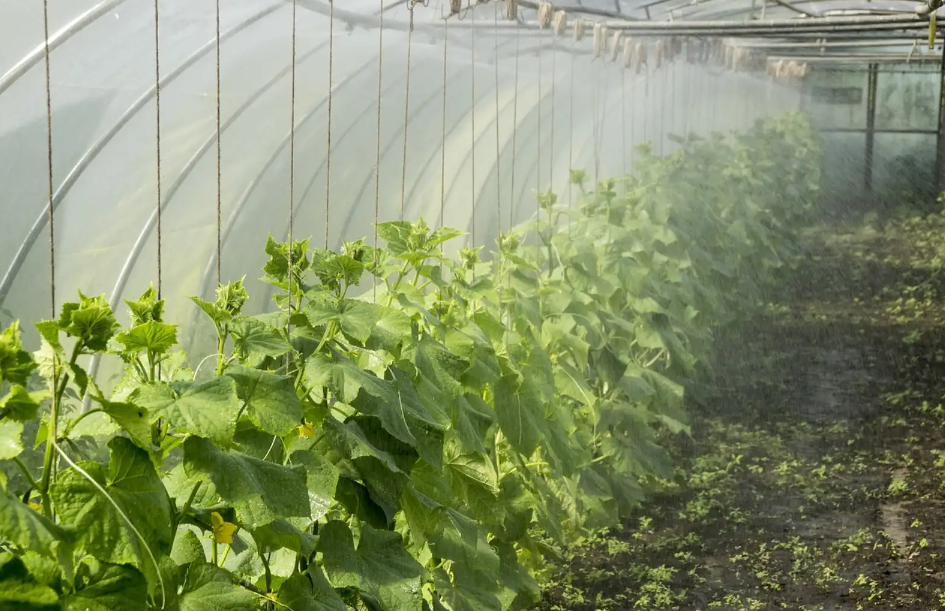
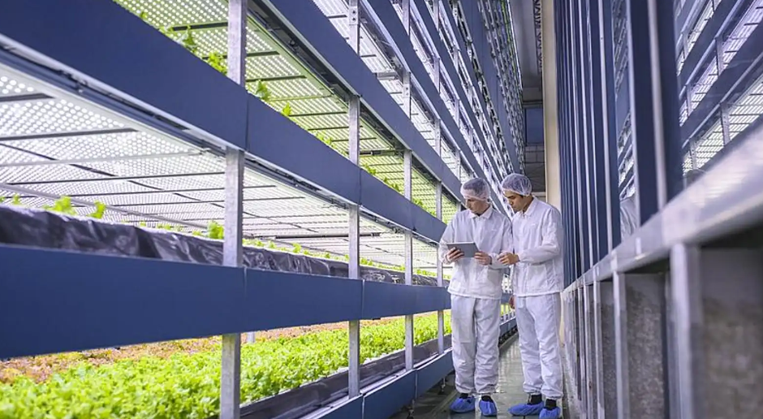
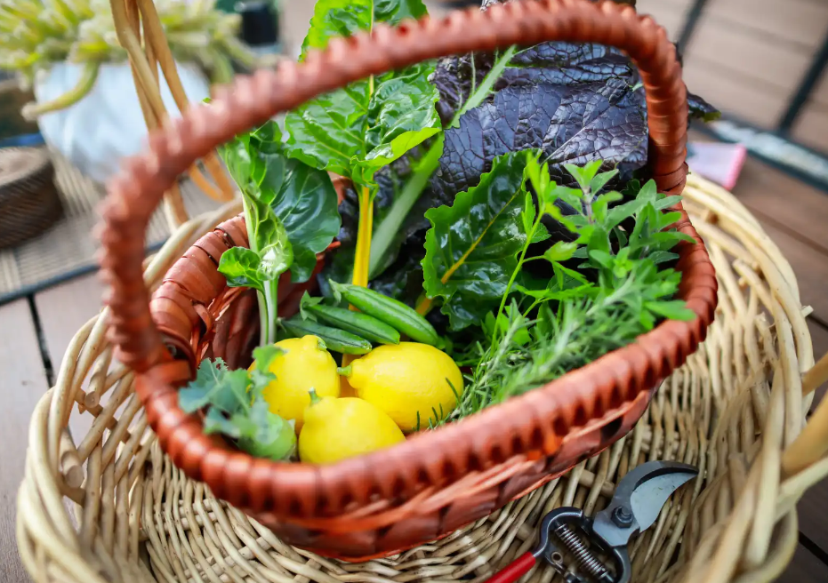
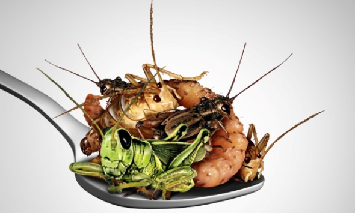

What are Alternative Food Resources?
Alternative food resources refer to sustainable food options that prioritize environmental health, local economies, and food security. These resources encourage practices that are less harmful to the environment and promote healthier food systems.
Click Here For More Information
Some Categories Alternative Food Resources
-
1. Aquaponics
Aquaponics is an innovative agricultural approach that, by definition, uses a combination of aquaculture (fish farming) and hydroponics (growing plants without soil) in a symbiotic recirculating system. The core principle of aquaponics is that fish waste serves as nutrients for plants. In a closed-loop system, water from the fish tanks is directed to the plant beds, where the plants absorb the nutrients and filter the water. The purified water then flows back to the fish, creating a continuous nutrient cycle. Aquaponics can reduce water consumption by up to 90%
 -
2. Community Supported Agriculture (CSA)
CSA programs allow consumers to buy shares of a farm's harvest in advance. This model fosters direct relationships between consumers and farmers and provides fresh produce throughout the growing season.
-
3. Urban Farming
Urban farming involves growing food in urban areas, utilizing vacant lots, rooftops, and community gardens. This practice enhances food access and community engagement in cities.
-
4. Permaculture
The core idea of permaculture is to create ecosystems that function according to nature's model. By combining different plant species grown in mixed cultures or at different levels, a natural balance is created and the nutrient supply of the soil is optimized. This creates synergies, whereby plants as well as animals mutually benefit from each other. As a result, pests are better kept out and nutrients are better preserved. The waste product of one element in the permaculture system can thus serve as a resource for another element. Such a self-regulating ecosystem uses natural resources more efficiently, making it more sustainable than conventional monocultures.
 -
5. Regenerative Agriculture
This approach aims to restore soil health and ecosystems through practices such as cover cropping, crop rotation, and holistic livestock management, improving biodiversity and carbon sequestration.
-
6. Vertical Farming
Vertical farming is a crop production method in which production takes place in several layers or levels on top of each other. The core idea is to make the best use of the limited space available and to enable agricultural production in urban or densely populated areas. The use of vertical farming offers a number of advantages. For example, the vertical arrangement allows a higher amount of crops per square metre compared to traditional horizontal cultivation and is independent of the season.
 -
7. Crowdfarming
Another innovative approach is Crowdfarming, a model that connects farmers and consumers and promotes the building of sustainable communities. It allows direct contact between consumers and farmers, creating a transparent and traceable food supply. Consumers can purchase shares in an agricultural production and thus share crop yields or animal products with farmers. Once you try it, you will realize that it is something completely different to have a connection to the origin of your own food. Best to do it with friends or family, then it is even more worthwhile!
 -
8. Protein production from insects
May not sound so appetizing at first, but it has a number of advantages over conventional livestock farming. Insects are extremely resource-efficient and require less food, water and land compared to cattle, pigs or chickens. Insects also produce fewer greenhouse gases and cause less pollution. Lastly, they have a high reproductive potential, so they can be farmed in large quantities. The protein requirements of the world's population are rising steadily, and even today production is not very sustainable, as livestock farming is associated with enormous emissions. Alternatives are therefore imperative in the long term. And it's not just humans who benefit from it: Insect-based food is also available for pets.

Benefits of Alternative Food Resources
- Environmental Sustainability: Reduces carbon footprint and promotes biodiversity.
- Local Economy Support: Keeps money in the community and supports local farmers.
- Healthier Food Choices: Provides access to fresh, nutritious foods without harmful chemicals.
- Community Engagement: Builds connections between consumers and producers, fostering a sense of community.
- Food Security: Enhances resilience in food systems by diversifying sources of food.
Further Resources
For more information on alternative food resources, consider checking out the following: